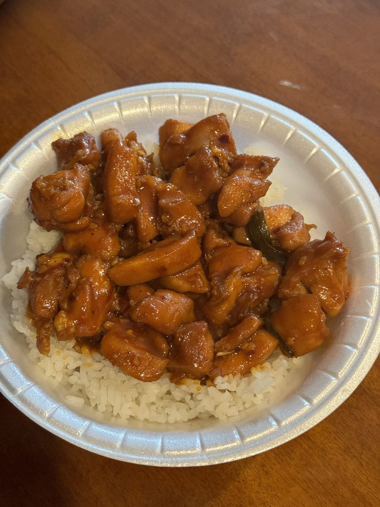
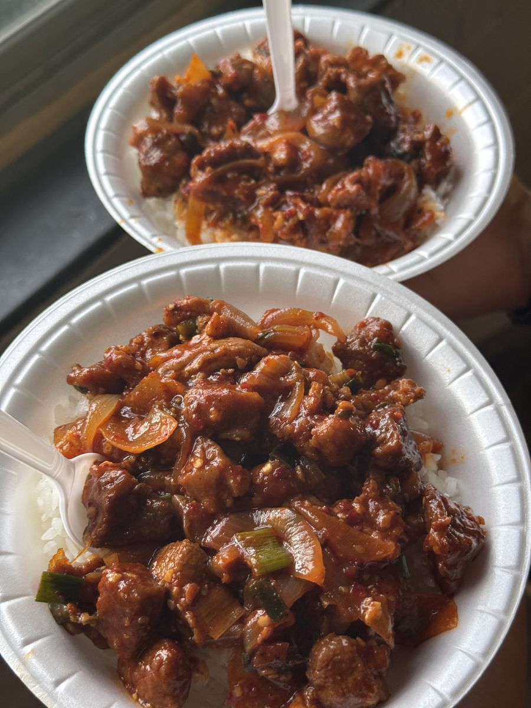
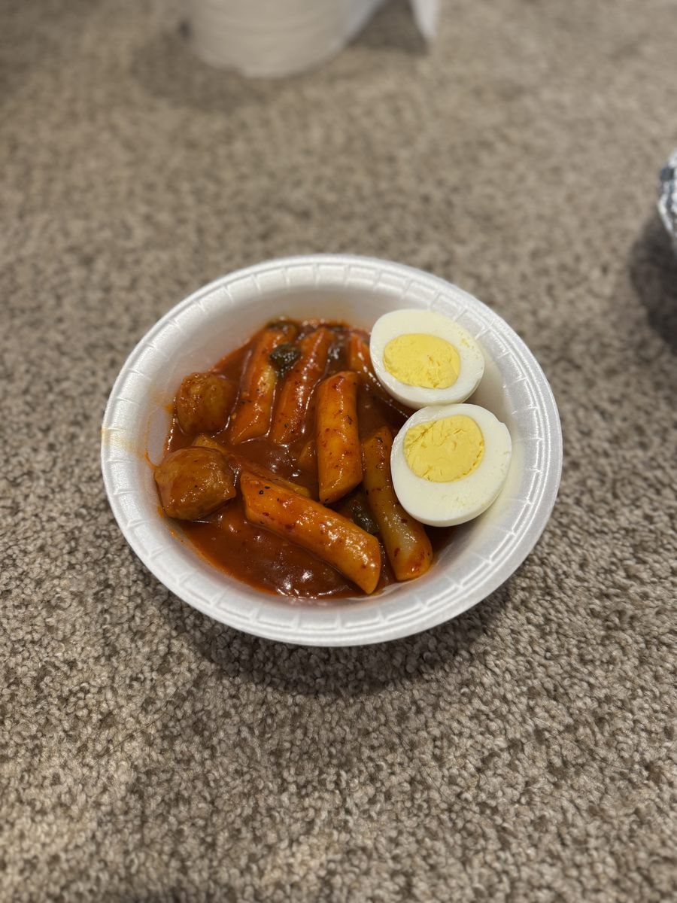
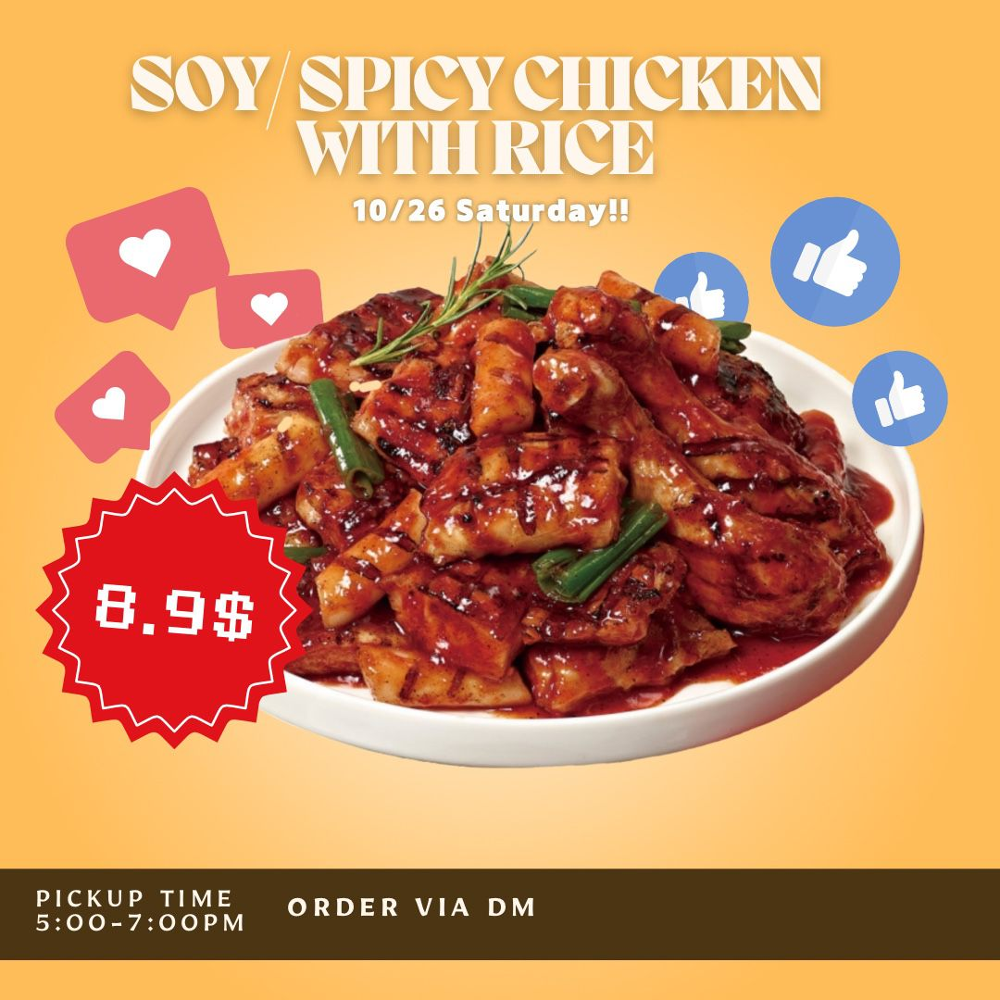
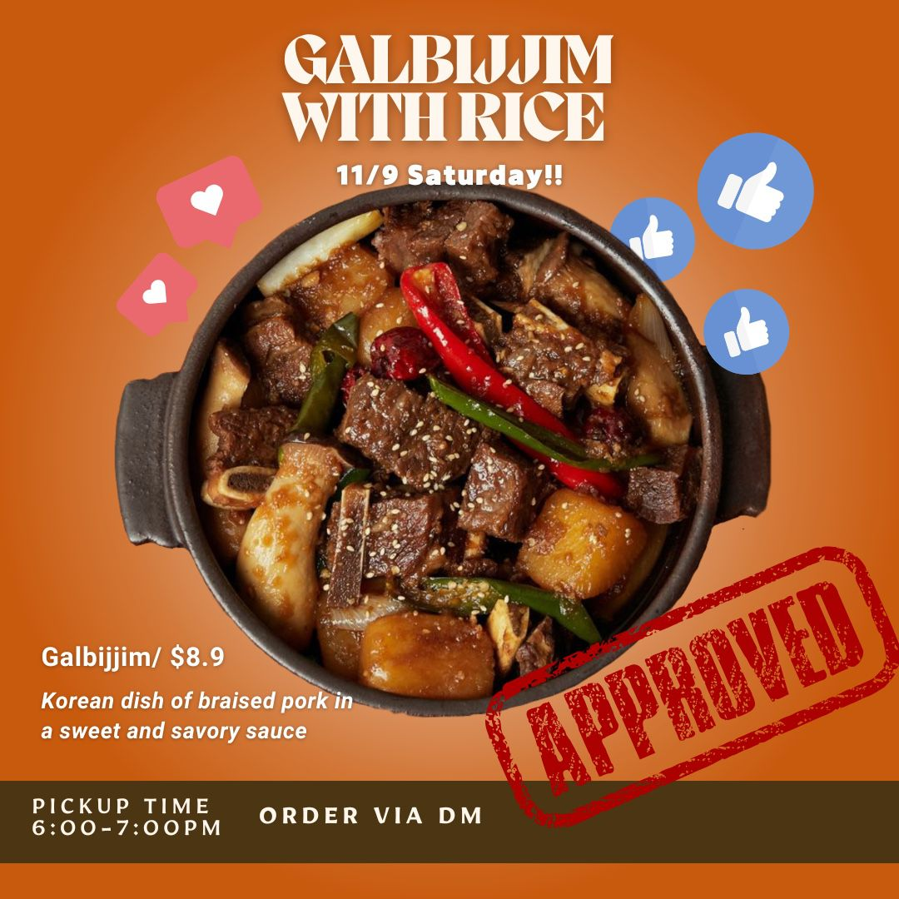
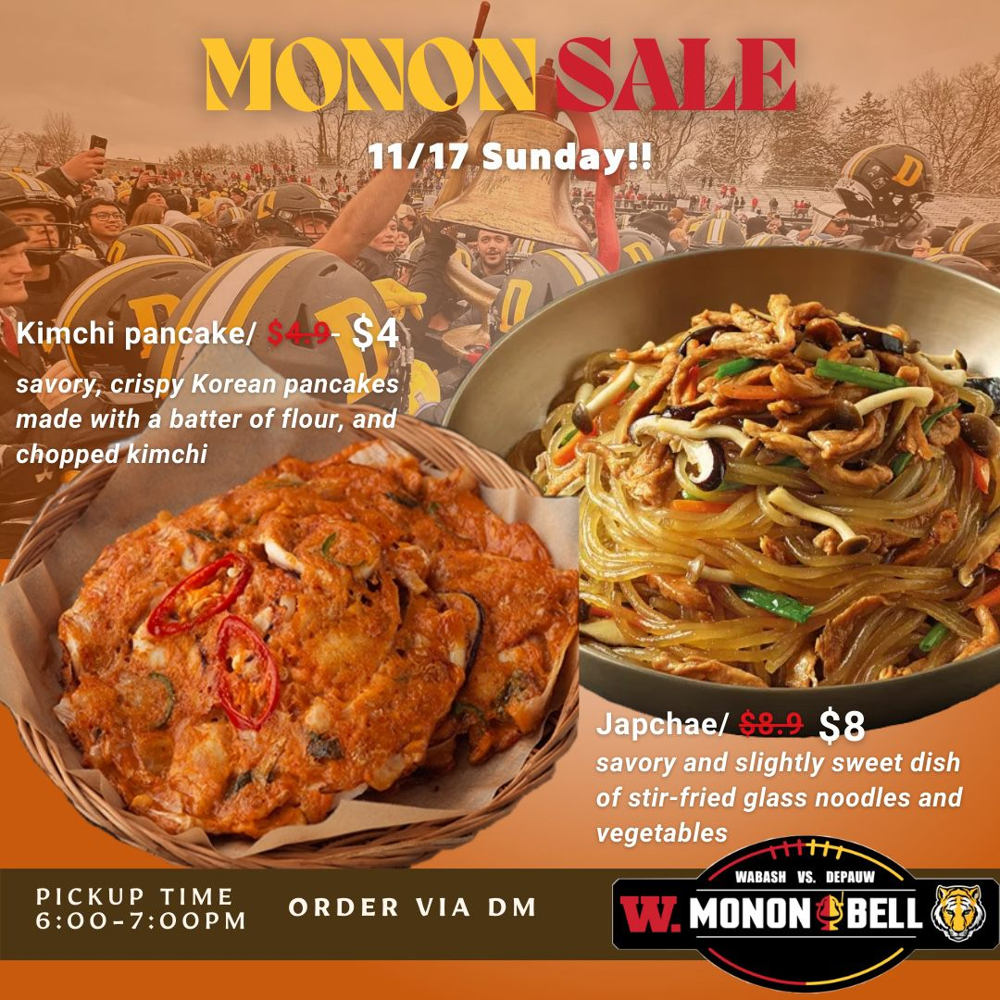
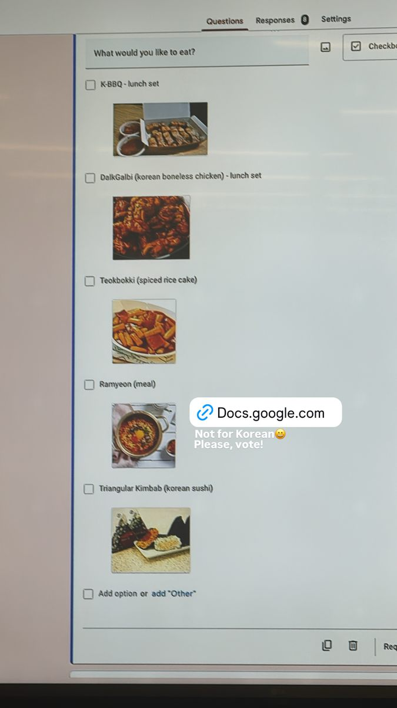
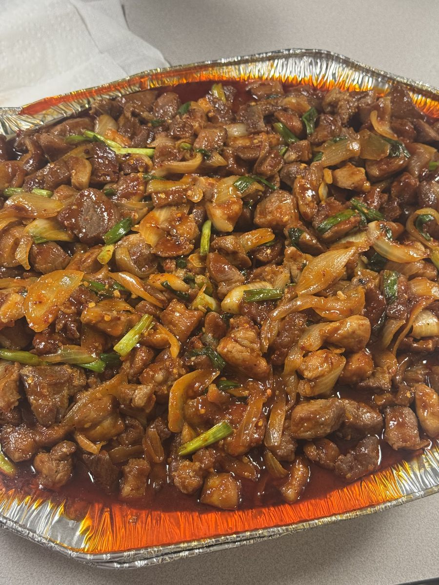
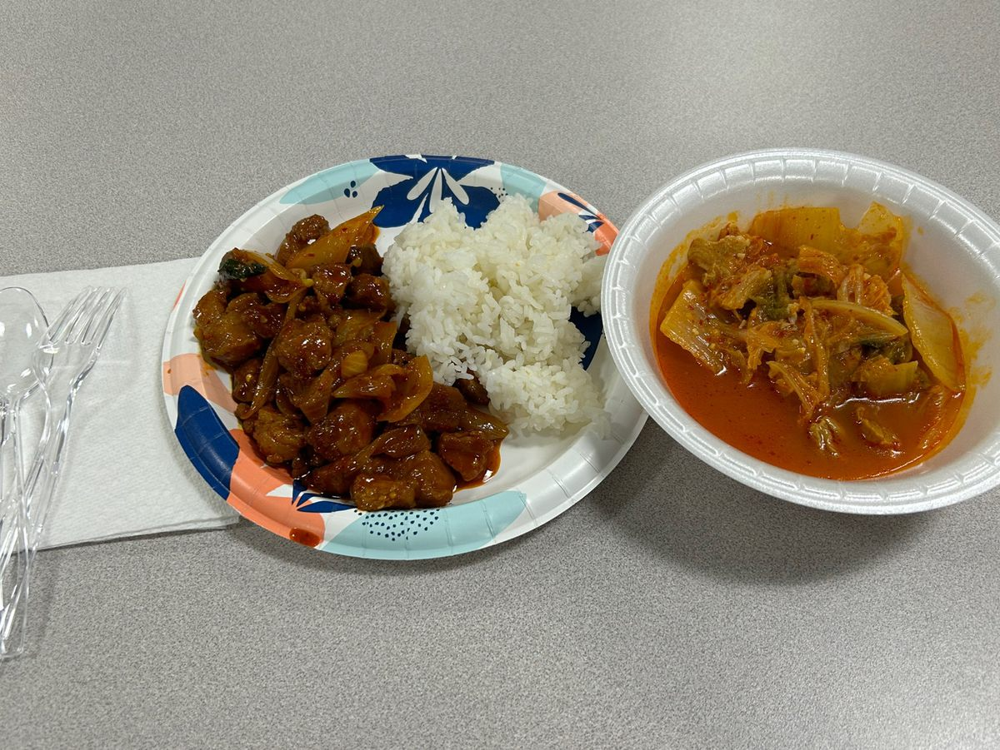

I started DPU K-Food with three friends in fall 2024 to find out whether Korean food would sell to students who are not Korean. We took pre-orders through a form or Instagram DM, collected payment by Zelle, Venmo or cash, and handed out dinner from a parking lot on Bloomington St. In this report I analyze all 156 recorded customer visits across our eight pickups to answer three questions: who bought, who came back, and why demand faded.
8 pickups, 1 catering, 1 group order · Sep 14 – Nov 22, 2024156 customer visits · 72 people · 348 meals served141 pre-launch survey responses
156
customer visits across 8 pickups, by 72 different people
50%
came back for a second pickup (36 of 72)
80%
of customers with a known origin were not Korean (47 of 59)
$2,486
total revenue across pre-orders, catering and a group order
Outcome
Is Korean food actually popular in the US?
I started the project to test whether Korean food would sell to people in the US who are not Korean. Within the market we tested, it did. That market was a single US campus, not the country, so the answer has limits.
What the data supports
Non-Korean customers made 103 of the 135 visits by customers with a known origin (76%). Every pickup had more non-Korean than Korean customers.
They came back. 51% of non-Korean customers ordered again, a rate not meaningfully different from Korean customers' 67%.
Americans were a real part of it: 13 people made 28 visits, and 62% of them returned.
Before launch, 82% of 141 surveyed students said they would buy at under $10.
What it does not show
Broad US demand. Customers were students at one university, over ten weeks, at $8–$10 a meal.
Demand among American consumers specifically. Americans were 13 of 59 customers with a known origin (22%). The largest groups were international students from Southeast Asia, East Asia and elsewhere.
Growing demand. Interest held among people already reached, but new customers slowed sharply after the first two pickups (54 new, then 18 across the remaining six).
Answer
Korean food won repeat customers from a diverse, mostly non-Korean audience on a US campus. Whether it holds with the wider American public is still untested.
Summary
Key findings
Korean food sold well outside the Korean community. Of the 59 customers whose origin is known, 47 were not Korean, and they placed 76% of those customers' orders. At the first pickup, 26 of 27 known customers were not Korean.
Non-Korean customers came back at a similar rate. 51% of non-Korean customers ordered again, against 67% of Korean customers. With 12 Korean customers, that gap is not statistically meaningful (Fisher's exact test, p = 0.52).
A small group of regulars carried the business. Half of all customers returned, and the 10 most frequent customers placed 36% of all orders.
Demand fell because new customers stopped arriving. New customers per pickup went 33, 21, 5, 8, 0, 5, 0, 0. Regulars kept coming, but nothing replaced the launch wave.
Southeast Asian customers were the biggest launch group but the least likely to return. They made up 10 of 33 customers at the first pickup, but only 28% of them ordered again.
The pre-launch survey predicted timing and price well. The survey's most-wanted slot, weekend dinner, matched 7 of 8 pickups. All mains stayed under the $10 that 82% of respondents said they would pay. Where ingredient costs were logged, gross margin was 46–53%.
01 · Demand over time
Eight pickups, one launch wave
The first two pickups drew 33 and 32 customers. After that, each pickup relied mostly on people who had already ordered. Pickups 5, 7 and 8 had no first-time customers at all.

Pickup 1 · Sep 14 · Dalkgalbi

Pickup 3 · Sep 28 · Spicy pork with rice

Pickup 4 · Oct 10 · Tteokbokki

Pickup 5 · Oct 26 · Instagram post

Pickup 7 · Nov 9 · Instagram post

Pickup 8 · Nov 17 · Monon Bell game-day sale
Customers per pickup, new vs returningA customer is "returning" if they ordered at any earlier pickup.
ReturningNew
Pickup
Menu
Price
Customers
New
Dishes
Revenue
Avg order
Show details: headcount and meals served
Headcount
People
Customer visits at the 8 pickupseach person counted once per pickup they ordered at
156
Different people behind those visits
72
Korean Student Association group orderbuyers on the group list
23
People served through recorded orders
179
Not included: 8 item rows at pickup 2 with no buyer name (they may be extra people or extra portions), and the DU fraternity catering order, whose headcount was not recorded.
Meals served
Meals
Dishes sold at the 8 pickupsfrom the order sheets, including rows with no buyer name
291
Korean Student Association group order (Nov 22)one meal per buyer on the group list
23
DU fraternity catering (Nov 9)estimated: $333 ÷ $9.90, the price of most meals
≈34
Total meals served
348
Revenue is what each pickup's order sheet recorded, and it matches the sheet's own totals. Pickup 2 includes $110.80 from rows with no buyer name. Pickup 7 fell on the same day as a $333 catering order for the DU fraternity, which is counted separately. We took only a few individual orders that day to make room for the catering.
02 · Retention
Half of customers came back
36 of 72
customers ordered at two or more pickups
36%
of all orders came from the 10 most frequent customers
Customers by number of pickups attendedHow many of the 8 pickups each customer ordered at. One customer ordered at 7.
Retention was steady from pickup to pickup. On average, 42% of one pickup's customers ordered again at the very next one. The first two groups of customers held up best: 52% of the 33 launch customers and 57% of the 21 customers who joined at pickup 2 came back later.
Show details: return rate by first pickup
First pickup
New customers
Came back later
Return rate
03 · Who bought
Mostly non-Korean customers, from the first pickup on
The launch reached international and American students first. Korean students joined from the second pickup. Non-Korean customers outnumbered Korean customers at every pickup.
Customers per pickup by originOrigin is nationality as I recalled it. "Unknown" means I could not recall it.
KoreanNon-KoreanUnknown
Origin group
People
Visits
Share of visits
Avg pickups
Repeat rate
How to read this table
These groups are small, so treat them as directions to look into, not proven differences. Only the Korean vs non-Korean split is large enough to test, and it shows no significant difference in repeat rate (p = 0.52). Removing the three customers labeled with low confidence changes nothing: non-Korean share stays at 79% and their repeat rate at 50%.
Two patterns stand out. Japanese and Chinese customers were few (7) but the most loyal, averaging 3.4 pickups each. Vietnamese students were the largest single group (15 customers), mostly from the launch, but 72% of Southeast Asian customers never ordered again.
04 · Survey vs reality
What people said and what they bought
Before launch, 141 students answered a short survey on what they wanted to eat, when, and whether they would pay under $10.

The survey went out as an Instagram story captioned "Not for Korean, please vote!"
Survey said
What happened
Dalkgalbi (100 votes) and K-BBQ (99) were the top picks, effectively tied
Both launched first. K-BBQ outsold Dalkgalbi 23 to 16 at the first pickup, so stated preference did not predict the actual choice.
Weekend dinner was the most-wanted slot (90 of 141)
7 of 8 pickups ran on a Saturday or Sunday evening. The one weekday pickup (Thursday, tteokbokki) still drew 21 customers.
82% would buy at under $10 (116 of 141)
Mains were priced $8.00–$9.90. The launch sold to 33 customers, about 1 for every 4 survey respondents. Survey answers were anonymous, so this is a ratio, not a measured conversion rate.
Tteokbokki drew 66 votes
It sold 24 portions to 21 customers when offered.
Add-ons raised order size. At the two pickups that offered a kimchi pancake on the side, the average order was $13.72 and $14.00. At single-dish pickups priced at $8.90, it was $10.17–$12.46.
05 · Economics
Roughly half of each sale was gross margin
Ingredient and packaging costs were logged for the first two pickups and the student association order. Labor was unpaid and is not included.
Show details: margins and revenue by channel
Sale
Revenue
Ingredient cost
Gross profit
Margin
Pickup 1 · Sep 14
$406.27
$206.74
$199.53
49%
Pickup 2 · Sep 21
$362.60
$197.33
$165.27
46%
Korean Student Association group orderNov 22 · 23 buyers
$200.00
$94.17
$105.83
53%
Revenue by channel
Revenue
Share
Individual pre-orders (8 pickups)
$1,942.30
78%
Catering for the DU fraternity (Nov 9)
$333.00
13%
Korean Student Association group order (Nov 22)
$200.00
8%
Tips
$11.08
<1%
Total
$2,486.38
100%
The fraternity catering order alone brought in more than any single pickup after the first three.
06 · If we ran it again
Our plan: weekend catering for Greek houses
The food worked for people who tried it. Reaching new people was the problem. Every pickup was announced the same way, through Instagram stories, which reach the same followers each time. After two pickups, almost no one new ordered. Cutting the price about 10% ($9.90 to $8.90, later $8) did not bring new customers either. The only orders that reached many new people at once were group orders.
What we concluded
Evidence
Strength
The product worked
Half of customers came back, including those who said the price was high. Average orders topped $10.
Strong
Getting new customers was the bottleneck
New customers per pickup: 33, 21, then 18 across the last six pickups.
Strong
The cause was one channel reaching the same followers
Promotion never changed. A price cut did not bring new buyers.
Moderate
Price mattered less for buyers than for non-buyers
Buyers who called it pricey kept ordering. Non-buyers named price, but only in informal conversations.
Weak
The plan, and what supports it
Who: keep selling to students, and add Greek houses as group customers. Greencastle has few potential customers outside the university. None of the chapter houses serve meals on weekends, so members buy food with their own or the house's money. Unlike dorm students, they have no prepaid meal plan to fall back on. Support: 7 of 8 pickups were already on weekends. The one DU fraternity order ($333, about 34 meals) earned more than any pickup after the third. The house paid from its budget, was referred by an existing customer, and wanted to reorder.
How to reach new people: a lower group price in exchange for a minimum headcount and a standing monthly order. Catering becomes our main business, and we pause individual orders or keep them small on catering days. Support: group orders were the only channel that reached new people in bulk. The Korean Student Association brought 23 buyers and DU about 34 meals. The DU order came through an existing customer, so houses can refer each other. A standing order also makes ingredient buying predictable.
What and at what price: the same Korean menu, with gross margin allowed to fall from about 50% to 40% for group pricing. Premium or jumbo items come later.Support: at the first pickup's ingredient cost (about $4.95 a meal), a 40% margin means about $8.25 a meal. Where a kimchi pancake add-on was offered, average orders were $13.72–$14.00, against $10.17–$12.46 for single dishes. Customers paid more for more food.
15 houses
fraternities and sororities that house students in their own chapter facilities at DePauw. At an estimated 30–40 residents each, that is roughly 450–600 people.
≈$5,000 / mo
ceiling if all 15 houses ordered once a month at the size of the DU order. For comparison, the whole fall 2024 run brought in $2,486.
We already handled a full catering order without problems, so cooking capacity is not the constraint. The trade-off is individual sales. On the catering day (Nov 9), we took only a few individual orders, and 5 customers came, the lowest of any pickup. That trade still paid: the $333 order was about twice the average revenue of pickups 4–8 ($167).

Korean Student Association group order · Nov 22

A plate from the same group order
Assumptions to test first
Assumption
Known so far
Measure
Houses reorder every month
1 house said it would
Houses on a standing order, and how many reorder
Houses refer other houses
DU came through an existing customer
New houses reached by referral
The full cost of a group meal leaves a 40% margin
Catering costs were not recorded
Ingredients, packaging and transport per meal
Catering earns more than the individual sales it replaces
1 catering day: $333 vs $167 average pickup (4–8)
Profit per team-day, catering vs pickup
House count from DePauw University, Greek Living. Residents per house is our estimate. DePauw enrolled 1,917 undergraduates in fall 2024.
07 · Method
How the data was built
Source. One spreadsheet with a separate order sheet per pickup, each laid out differently. I merged all eight into one table of orders and dishes with Python, and every rebuilt pickup total matches the sheet's own total. Pickup 1 has no total cell, so I checked it against the payments we actually received ($406.27).
Identity. I matched customers across pickups by name and merged spelling variants of the same person, checking the uncertain merges with the team. Every customer is replaced by an anonymous ID, and I dropped phone numbers.
Origin labels. Orders recorded names only. I labeled each customer's nationality from memory, working from an alphabetical name list with order history hidden to reduce bias. I labeled uncertain cases Unknown (13 of 72) and marked 3 labels low confidence. Nationalities were grouped into broad regions for analysis. This reflects nationality, not race or ethnicity.
Limits. 72 customers is a small sample, so group comparisons are directional. Hiding order history reduces labeling bias but does not remove it. I likely remembered frequent customers better, so Unknown labels may cluster among one-time buyers (the Unknown group has the lowest repeat rate, 31%), which would push the known groups' repeat rates up. Ten rows at pickup 2 ($110.80) had no buyer name and are excluded from customer metrics but kept in revenue. Costs are known only for pickups 1–2 and the group order. The catering meal count was not recorded and is estimated from revenue at $9.90 a meal. The survey was anonymous and cannot be linked to buyers.